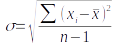
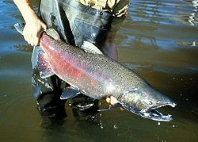
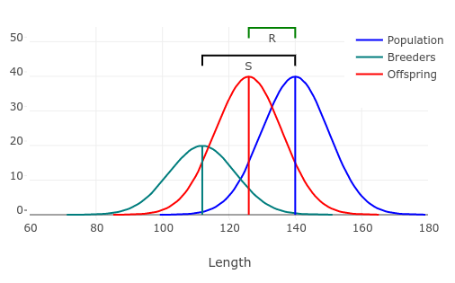
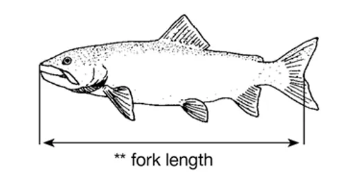
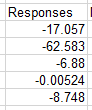

Arrays and matrices are closely related terms. Arrays are computer data structures that store data in rows and columns. Matrices are mathematical structures made up of rows and columns. Mathematicians and computer scientists may be able to tell you how they are different, but we will use the terms interchangeably in here.
Array formulas in Excel work on ranges of cells, but apply their calculations to the cells one at a time.
We will look at two applications of array formulas:
- To do complex calculations in a single cell
- Matrix math
Download this file and save it to your OneDrive (or your H: drive, or your own computer... whatever is working for you).
Array formulas for summarizing grouped data
Array formulas can greatly increase the clarity and interpretability of a spreadsheet by allowing you to do complex calculations in a single cell, so that only the result of the calculation is displayed.
As an example we will calculate a mean and standard deviation from data on numbers of aphids on a sample of 100 tomato leaves from a garden.
Switch to sheet "Grouped data". You'll see that you have a column of data called "Number of aphids" and one called "Frequency" giving the number of times that each number of aphids was counted out of 100 plants.
The challenge here is that the data are already in a summarized form - instead of having 100 individual measurements we have a column showing the possible data values (column "Number of aphids") and another that shows how often they occurred (column Frequency). We can't just average the numbers of aphids in column A to get the mean, since some of counts of aphid numbers occurred frequently (2 aphids were found 27 times) and some didn't occur at all (no leaf had 8 aphids).
A. The arithmetic mean is Σxi/n, which says that we need to sum all the data values and divide ty the sample size.
The sample size is easy - it's the sum of the frequencies (n = 100).
To get the sum of the data values we need to add each number of aphids for every time they appear in the data set - we need to add zeros ten times, 0 + 0 + 0 + 0 + 0 + 0 + 0 +0 + 0 + 0, and then add that to the 23 times we counted 1 aphid (1+1+1... out to 23 ones), then add that to the 27 times we observed 2 aphids, and so on. Equivalently, we multiply the numbers of aphids by their frequencies, and sum the products to get the sum of the data values for the numerator of our mean calculation.
This is pretty simple, so we'll do just do this as an array formula:
- In cell A14 write "Mean"
- In cell B14 type =sum(a2:a12*b2:b12)/sum(b2:b12) and hit CTRL+SHIFT+ENTER. You now have an array formula giving the mean for the data.
As an array formula the ranges of cells are each treated as arrays, and a2:a12*b2:b12 is interpreted to mean "a2 x b2, a3 x b3, a4 x b4... a12 x b12". These products are themselves a new array, and this new array is used as the argument for the sum() function, which sums all the products. The sum of the frequencies in the denominator is the sample size, and it doesn't do any array calculations - it works the same as if it was not part of an array formula, it just sums the range of cells in its argument.
New in Excel 365 - dynamic arrays
Up until Excel 365 it was required that you use CTRL+SHIFT+ENTER to use an array formula. Now when you enter an array formula if you just hit ENTER Excel will treat the entry as an array formula and adjust the output as needed (if the output range will spill over into cells that already have contents Excel will let you know). Formulas entered this way are called dynamic array formulas - if you select a cell within the output range it will put a gray order around the cells so you can see that they are all output from a single dynamic array formula, but the curly brackets don't show up in the formula bar.
This is so new that I'm not sure what the implications are - I have tried out the calculations we use for this exercise and have not yet found one that fails if you hit ENTER instead of CTRL+SHIFT+ENTER. I'll continue to keep CTRL+SHIFT+ENTER in the instructions, but if you forget and use ENTER instead and everything works there's no need for you to re-do the entry with CTRL+SHIFT+ENTER, it seems they're essentially the same thing.
B. We're going to calculate the standard deviation for these grouped data now. The standard deviation is a measure of dispersion in the data, equal to the average distance of observations from the mean. We calculate it as:
Complex cell formulas - use with caution
Before we move on to the calculation, though, a quick caution about complicated formulas. If you recall from last week, we avoided having cells with intermediate steps of calculation in our spreadsheet by nesting calculations within a single cell formula, such as sin(radians(B2)) - this allows us to do a unit conversion on an angle stored in B2 and then calculate the sin() of the converted value without having to devote a column in the spreadsheet to the conversion. Array formulas allow us to take this approach to the next level, which allows us to make cleaner, less cluttered spreadsheets, which is good.
However, nested formulas makes it harder to detect errors, because some of the calculations are hidden within the nested parts of the formula.
Because of this you should be especially vigilant about double-checking your results if you use array formulas.
Our approach will be do do the calculations in two ways - once without using array formulas at all, in small steps that are easy to error check, and then when we're confident we got it right, we will do the entire calculation again with an array formula in a single cell.
This means that we're not saving ourselves any work - if we have to do the calculation of the standard deviation without array formulas anyway to check our answers then using the array formula is redundant, and if our only goal was to save time we wouldn't bother with the array formula. But, doing it both ways allows us to get a version that's simple and clean at the end, while ensuring that we didn't make any calculation errors in our complex formula - the journey will be longer, but we'll be happier with the destination.
Let's do the version that doesn't use array formulas first - to get the sums of squares (the numerator of a standard deviation) we need to:
- In cell C1 type "Squared differences"
- In cell C2 type =(a2 - b$14)^2. This is the squared difference between 0 aphids (a2) and the mean number of aphids of 2.38 (b$14). The dollar sign in front of the row reference for the mean will keep the formula pointing at row 14 when we copy and paste it, so you can copy and paste this formula to the rest of the rows (through C12). You now have squared differences between each number of aphids and the mean number of aphids.
- In cell D1 type "Diffs x Freqs"
- In cell D2 type =b2*c2. Just like with the mean we need to add the squared difference in C2 as many times as it occurs in the data set, which is the frequency in B2 - multiplying C2 by B2 accomplishes this.
- Copy cell D2 and paste to the rest of the rows (through D12).
Now that we have the squared differences we can finish the standard deviation calculation in a single cell:
- In cell A15 type "SD"
- In cell B15 type =sqrt(sum(d2:d12)/(sum(b2:b12)-1)). You should get a value of 1.77 (to the second decimal place) - watch your parentheses as you enter this formula, by the way. Excel tries to help by briefly bolding the matching parentheses as you enter them, but you won't get the right answer unless the operations are grouped correctly.
This is not an array formula, because there is no per-cell operation being done - both of the cell ranges in the numerator and denominator sums are just used as arguments to a sum() function.
C. Now that we're confident we know what the correct standard deviation is, we can do all these calculations in a single cell, using an array formula.
- In cell A16 type "SD, one cell"
- In cell B16 type the formula "=sqrt(sum(b2:b12*(a2:a12 - b14)^2)/(sum(b2:b12)-1))" and hit CTRL+SHIFT+ENTER (note the color coding is mine, to help you see the different parts of the calculation, and to better see the matching parentheses, but may not match what you see in Excel)
You should see the same value reported in B16 as you got for cell B15.
If you look at this formula it does exactly what we did without using array formulas, but does it all in one cell:
- It calculates the squared differences - this part of the formula is in red. An array formula is needed to do this step, because the mean in b14 is subtracted from each cell in the cell range a2:a12, which makes a new array of differences, and then each difference is squared.
- It multiplies the squared differences by their frequencies - this step is in dark blue. The multiplication step also requires an array formula, because the frequency in b2 is multiplied by the squared difference for a2, then the frequency in b3 is multiplied by the squared difference for a3, and so on.
- The squared differences x frequencies are summed - multiplying the array of frequencies by the array of squared differences makes a new array, which is summed with the purple sum() function. The sum() function doesn't need to be an array formula, but it takes the array of differences multiplied by frequencies as an argument, and sums the elements of that array to get the sums of squares that we need
- The degrees of freedom are calculated - the frequencies in b2 through b12 are summed, and then 1 is subtracted to convert the sample size to degrees of freedom (in orange). This sum(b2:b12) would work the same without being an array function
- The sum of squares is divided by the degrees of freedom - the slash in the middle of the formula (/) divides the sum of squares by the degrees of freedom. Sums of squares divided by degrees of freedom is called the variance, and which is the square of the standard deviation, so at this point the formula has calculated the variance.
- The square root of the variance is calculated to produce the standard deviation - the sqrt() function uses the entire variance calculation as its argument, in green, and completes the calculation of the standard deviation.
Presumably you agree that this formula is more complicated and harder to interpret what is going on than the first approach that split the calculation into a series of smaller steps.
The advantage of this complicated formula is that you wouldn't need the "squared differences" or "Diffs x freqs" columns - they aren't meant to be interpreted, they are just steps in the calculation of the standard deviation, and having them there invites confusion. If you were doing this calculation for your own data analysis project, you could delete those columns and the sd calculation in B15, and just retain the sd calculation in cell B16, once you know it's right, which would leave only the data and the summary statistics that are meant to be interpreted - don't do that, though, because I want to see both of your calculations.
Responses to selection on genetically correlated traits
Size-selective harvesting is very common in hunted or fished wild populations, and usually the sizes selected are the largest individuals in the population. This image of a Chinook salmon on the left is an example of a species that is harvested in this way - both commercial harvesting and sport fishing focus on the largest individuals. We can expect that removing the larger individuals from the population will leave the smaller individuals that escaped harvest to be the parents for the next generation. If we make it dangerous for them to be large we can expect them to evolve smaller body size.
Body length is a phenotypic trait, which means it is part of the way the organism looks or functions. The length of the salmon's body is a quantitative trait (i.e. varying continuously), and most quantitative traits are polygenic (i.e. are affected by multiple genes).
Environmental conditions experienced by a salmon as it grew will also affect its adult length, so there is an environmental component to length as well.
Although both the genes they carry and the environment they grow in will affect their lengths, only the genes can be passed on from parent to offspring. The ability of a parent to pass its trait value on to its offspring is called the heritability of the trait. Heritability is symbolized as h2, and it can fall between 0 (no genetic contribution to the trait value) and 1 (complete genetic control over the trait value, no environmental contribution).
We predict how selection will change a single trait using the breeder's formula: R = h2S, where R is the amount of response to selection, h2 is the heritability of the trait, and S is the selection differential.
The graph to the left illustrates how this works. This example uses a heritability of h2 = 0.5, which means that 1/2 of the variation in length of the salmon is due to their genes. The selection differential is equal to the difference in mean for the population as a whole and the population that is selected to be the breeders. In this case we're selecting the smaller individuals to be breeders as a side effect of taking the larger individuals from the population, and we can expect the offspring will fall halfway between mean for the population as a whole and the mean for the breeders.
The breeder's formula works well for one trait at a time, but organisms are integrated units, not collections of independent traits. When you select against salmon with big body lengths by removing them from the breeding pool you end up changing all sorts of other traits as well. Fishing may not directly target fish that are fast growing, but fish with big lengths may have gotten so large by growing faster - selecting against long fish could end up also selecting against fish that are fast growing, and result in slower growth rates over time. The selective pressure put on traits that are not under selection themselves, but are correlated with traits that are, is called indirect selection. We predict how indirect selection will affect response to selection on traits using a matrix of genetic variances and covariances, called a G matrix.
If you switch to the "Matrix" tab you'll see an example of a G matrix that comes from a study by Hard (2004). Variance-covariance matrices are organized like a correlation matrix, which you may have seen before - the row labels and column labels are the same, and the body of the matrix holds variances when the row and column labels match, and holds covariances between two variables when the row and column labels are different. Since the row and column labels match in a diagonal from the upper left to the lower right corner of the matrix, this is called the main diagonal of the matrix. The main diagonal is made up of genetic variances, which are used in the same way as heritabilities in the breeder's formula, to predict the effects of direct selection on traits.
The other elements in the G matrix are covariances. Covariances are like correlations that haven't been standardized to fall between -1 and 1 - they indicate how two variables change relative to one another, but they still have the original data units.
It's harder to compare covariances to one another to see which variables have the strongest inter-relationship because different pairs of variables have different units. But, but you should at least be able to see that all of the covariances in the G matrix are positive - this means that in every case as one variable increases so does the other (and, as one decreases the other decreases too).
The equivalent of a selection differential when we work with responses to selection across multiple correlated traits is the selection gradient. We won't worry too much about how selection gradients differ from selection differentials for the purposes of this exercise because they serve the same purpose - they represent how much selection pressure is being put on a trait, and in what direction (positive selection gradients select for an increase in the trait value, and negative selection gradients select for a decrease).
When we select for a single trait, like length of the body, we put a direct selection pressure on that trait, and an indirect selection pressure on any trait it's correlated with. The way we will predict how direct and indirect selection produce change in all the organism's traits is to use a version of the breeder's formula designed for multiple correlated traits, which tells us:
R = Gβ
R is now a column of responses, each row of which will hold the predicted response to selection for each variable we are tracking. G is the genetic variance-covariance matrix, and β is a column of selection gradients.
We will use this model to explore how these traits are expected to change as different patterns of selection are applied to them.
A. First, we need to set up the model:
- In cell H3 enter the label "Gradients" - these will be where we put the direct selection gradients, symbolized as β in the formula
- Enter a 0 for adult age (H4), adult weight (H6), spawn date (H7), and growth rate (H8), and enter a -0.01 for fork length (H5) - initially we'll just put direct selection pressure on adult length (fork length is a standard measure of length in fish that measures from the tip of the snout to the fork in the tail
- Enter "Responses" into cell J3
- Select cells J4 through J8 - when we multiply the G matrix by the gradient column vector we'll need an output range with the same number of rows as G (five) and the same number of columns as the gradient vector (one)
- Type the formula =mmult(b4:f8,h4:h8), and then use CTRL+SHIFT+ENTER to enter this as an array formula - if all went well you now have five responses, one for each trait, like this.
You can already see that there are changes in all of the traits, even though we're only selecting for length, because of indirect selection via their covariation with weight.
We have a problem, though - the responses are all giving expected amounts of change in the trait, but all of the trait values have different units. The biggest number is -62.583 for fork length, but we don't know if that's a big response because it could be that fork lengths are really big numbers (salmon are big fish, and the lengths are in mm). If we divide these responses by the mean trait value they will all give us a relative change on a proportional scale, which we can format as a percent - this will make it much easier to compare the responses across variables.
The publication I took the G-matrix from did not provide the means for these variables, so we will use some ballpark estimates taken from other sources.
- In cell K3 enter "Means (untransformed)"
- 3 for adult age (K4)
- 1092 for fork length (K5)
- 13600 for adult weight (K6)
- 318 for spawn date (K7, this is the number of days elapsed since the first of the year, and Chinook spawn in the fall)
- 62 for growth rate (K8)
These means are all in their natural, untransformed units, but you may have noticed that the labels in the G matrix show that some of the variables have been transformed to make the relationships between the variables more linear. We need to apply the same transformation to the means that were used in the G matrix before we can use them.
- In cell L3 enter "Means (transformed)"
- Enter the transformed means:
- Enter =k4^3 in cell L4
- Enter =k5 in cell L5 (no transformation needed)
- Enter =sqrt(k6) in cell L6
- Enter =ln(k7) in cell L7 (ln is the natural log)
- Enter =k8 in cell L8 (no transformation needed)
Now we can divide the responses in column J by these transformed means and format the result as a percentage to get a percent change per generation:
- In M3 enter the label "Percent change"
- In M4 enter =j4/l4 - this will divide the response for adult age (in J4) by the cubed mean adult age (in L4 - l is lower case L)
- Copy the formula in M4 and paste it to M5 through M8
- Set the display type of cells M4 through M8 to percentage
Note that the biggest percent change was not in the trait that was under direct selection (fork length), it was in adult age, which has a large correlation with fork length.
We're going to change the gradients a few times, but we want to record our results for each ones:
- Enter the label "Trait" in cell A11
- Copy the names of the variables from A4 through A8 and paste them into A12 through A16
- Enter the label "Length -" in cell B11 (that's a minus sign, signifying negative selection on fork length)
- Copy the percent change values from M4 through M8 and paste special as values into the cells B12 through B16
B. The first scenario in step A imagined that fishing only exerted direct pressure on one trait, adult fork length, but in fact it exerts direct pressure on other traits as well (perhaps inadvertently, but direct pressure nevertheless). For example, growing rapidly so that you can breed before you get caught may be beneficial in a harvested population, and although fishing doesn't specifically target the slow-growing fish, there may still be a direct benefit to rapid growth.
- Leave the direct selection on fork length at -0.01
- Enter a value of 0.01 into H8, which is the gradient for growth rate
- Enter the label "Length -, growth +" in C11
- Copy the percent change values and paste-special to C12 through C16
The positive gradient value for growth rate means we're selecting directly for faster
growth as well as for shorter length. The fact that the selection on growth rate is positive while selection on
fork length is negative actually reduces the percent responses for all of the traits. The positive selection on
growth rate did not overcome the negative selection on fork length, but it did decrease the amount of reduction in growth
rate that we saw when growth rate was only indirectly affected by selection on fork length.
C. In addition to growing faster we might expect that breeding younger would be beneficial. Salmon migrate out to sea, spend 2-4 years growing, and then return to spawn. Although a salmon can only choose to spawn at 2 years, 3 years, or 4 years, the average age can decrease or increase by fractional amounts, depending on how many animals of each age are spawning in a year.
To select for younger breeding:
- Leave the selection gradients for fork length and growth rate at their current values
- Enter -0.01 into cell H4 - this selects against older adult ages, and thus for younger ages
- Label cell D11 "Length -, growth +, age -"
- Copy and paste special the percent changes as values to D12 through D16
D. We are now going to graph the results - select the range of cells that has the trait names, the responses, and the column headings (A11 to D16) and insert a line graph.
The graph has some issues we need to fix, the first of which is that the traits are on the x-axis, and the series are the different selection gradients we used. We want the opposite - the gradients should be on the x-axis, and each line should be a trait. To swap them, select any one of the lines, right-click, and select "Select data".
- In the "Select Data Source" window that pops up, click "Switch Row/Column"
- Click "OK"
You now have a different line for each trait, and you can more easily see how changing the selection gradients affect them.
Next, since we have both positive and negative changes the default of having the x-axis cross the y-axis at 0 is resulting in the labels being located in the middle of the graph. We would like them at the bottom where they belong. This is done, a little counter-intuitively, by changing a y-axis setting:
- Select the y-axis by clicking on any of the axis labels
- Switch to the axis options (click on the little histogram icon on the right side at the top of the window), and find the "Horizontal axis crosses" settings
- Click on "Axis value" and set it to the smallest number on the y-axis in the graph, which is -15
You will now have the labels for the selection gradients at the bottom of the graph.
You can change the chart title to "Responses to selection", and add a y-axis label of "Percent response".
E. Now that you have the results, notice a few interesting patterns:
- Selecting against longer animals alone caused at least a little change in every trait. Traits that either have very little heritable variation (small variances), or that aren't strongly genetically correlated with weight (small covariances) change the least - spawn date barely changed at all, and it has small values for it variance and all the covariances with other traits
- When there is positive selection on one trait and negative selection on another the responses will offset one another to a degree - note that the amount of decline in length expected was reduced a little when growth rate was positively selected
- Indirect selection can overwhelm direct selection - when negative selection was applied to both length and age the response for growth rate became more strongly negative, even though we kept the direct positive selection on growth rate in place
Assignment
That's it! Upload your completed worksheet to the class web site.